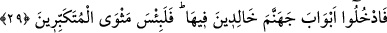

“hiçbir kötülük yapmıyorduk.” Şirkte bulunmuyorduk “diyerek teslim olurlar.”
Âhirette azabı görünce boyun eğerler ve teslim olurlar, muhâlefeti terk ederler.
Dünyâdaki kibir, büyüklük taslama ve karşı koymayı bırakırlar.
“Hayır,” İlim sâhipleri tarafından bu onlara bir red cevâbı ve inkâr ettikleri şeyin
isbatıdır.Yâni siz yapacağınızı yapmıştınız, demektir. “Allah sizin yaptıklarınızı elbette
çok iyi bilendir.” O sizin cezânızı verecektir. İşte şu an onun zamanıdır. Kendi kendinizi
yalanlamanız ve inkârınız size fayda vermez.
29. “O halde, içinde ebedî kalacağınız cehennemin kapılarından girin!
Kibirlenenlerin yeri ne kötüdür!”
“O halde, içinde ebedî kalacağınız” her sınıf insan için hazırlanan “cehennemin
kapılarından girin! Kibirlenenlerin yeri” olan cehennem “ne kötüdür!” Âyette yerilen
yer hazfedilmiştir ki o cehennemdir. Onların oradaki ikâmetlerinin sebebini hissettirmek
için kibirlenenler olarak zikretti. Mütekebbir ile kasdedilen, tevhîde karşı kibirlenen
müşrikler ile müslümanlardan kibirli olan kişilerdir.
Şeyh Ali Semerkandî, Bahru’l-ulûm adlı tefsirinde der ki: Tekebbür üç kısma
ayrılır:
1- Allah’a karşı tekebbür: Bu kibirlerin en kötüsü ve çirkini olup kaynağı sırf
cehâlettir.
2- Peygamberlere karşı tekebbür: Bu nefsin şeref ve üstünlük iddiâ etmesi, diğer
insanlar gibi bir beşer olan peygambere itâatten kendini yüksek görmesidir. Bu kıyâmet
gününde ebedî azâba müstehak olma konusunda Allah’a tekebbür gibidir.
3- İnsanlara tekebbür: Bu kendisini üstün görüp başkasını hakir görmektir. İnsanlar
onu kendilerine itâata çağırsalar onlara boyun eğmekten geri durur, onları bayağı ve
küçük görüp onlarla eşit olmaktan çekinir. İşte bu da çok çirkin bir kibir çeşididir,
sâhibi de büyük bir câhildir. Her ne kadar önceki iki sınıfın altında ise de
“Kibirlenenlerin yeri ne kötüdür!” âyetinin umûmuna dâhil olduğu için eğer tevbe
etmezse büyük bir cezâyı hak eder. Yine kim Allah’ın kullarından birine büyüklük
taslarsa, büyüklüğünde ve sıfatlardan bir sıfatta Allah’a karşı gelmiş olur.
Ebû Sâlih Hamdûn b. Ahmed Kassâr (r.h.) der ki: “Kim kendi nefsini Firavun’un
nefsinden daha hayırlı olduğunu zannederse kibirlenmiş olur.”
Mesnevî’de der ki:
Firavunda ne var idiyse sende de var.
Fakat senin ejderhâ kuyuya hapsedilmiş!...
Senin ateşine, Firavun’un ateşine atılan odun atılmamakta.